Suppose we created the simplest possible programming language. How would it look like? How long would it take you to learn it? How could we implement it? Would it be practical and useful for real-life applications? Let’s see.
Introduction: How many meters?
About 30 years ago I started to create commercial software applications. I used Clipper (dBaseIII), a DOS-based programming language and database in a single package. The manual was about 300 pages. After reading 300 pages, you knew everything you needed to know and you knew where to search for help when you got stuck.
In 1994 I switched to Powerbuilder to write Windows GUI applications. The documentation was bigger: there were several books, totaling about 3000 pages. I can still remember how amazed I was by the total thickness of the books on my bookshelf: 20 centimeters.
Three years later I upgraded to the newest version of Powerbuilder. Now I needed even more space on my shelf: 35 centimeters. But there was another otherness: Amazement turned into nervousness. I realized I wouldn’t be able anymore to 'know everything'.
In 2003 I upgraded again. I was surprised when the postman handed me a small box with … no books inside. The documentation was on CDs - a clever way to reduce the documentation’s weight, volume, and price.
Now imagine: You are a full-stack developer in 2018. The postman rings at your door and delivers a "Full-Stack Software Development Environment for Creating Big Professional Web Applications, All Books Included".
How many meters would you need to free up on your bookshelf?
How many thousands of pages would you need to read if you wanted to 'know everything'?
And how long would your knowledge be up to date?
It looks like something is wrong. Very wrong!
An important question arises: Couldn’t we have much simpler software development environments allowing us to write the same kind of applications?
Bjarne Stroustrup, the creator of C++ (generally considered as one of the most complex programming languages) thinks himself computers should be easier to use:
I have always wished for my computer to be as easy to use as my telephone; my wish has come true because I can no longer figure out how to use my telephone.
He also states there are ways to reduce complexity:
I’m convinced that you could design a language about a tenth of the size of C++ (whichever way you measure size) providing roughly what C++ does.
Within C++, there is a much smaller and cleaner language struggling to get out.
Remember:
"Simplest Possible"
A few weeks ago I started to ponder about how a language would look like if it was 'as simple as possible'. I asked myself:
What is the simplest thing that could possibly work?
I set a few goals:
-
There should be a minimum of concepts that are easy to understand. Anybody should be able to learn the language in a few days or hours, depending on his/her experience with other languages. The thickness of the complete manual should be measured in millimeters.
-
The language should be practical, enjoyable, and well suited for creating useful, real-life mini-applications.
-
The language should be portable and run on Windows, Unix/Linux and Mac.
I also defined a few non-goals:
-
The goal is not to design a language that is easy to build. If we can chose between making life easy for the user or the compiler, we will chose 'user' - without hesitation.
-
'Powerful language features' that are nice in exceptional situations will be omitted.
-
Time and memory consumption of a running application are not priorities.
We need a name for the thing we are going to talk about. Let’s simply call it Simplix.
In the rest of this article I will:
-
explain the step-by-step design process of Simplix
-
show some examples of source code (including real-life examples)
-
present a proof-of-concept implementation of Simplix
-
discuss the result
Remember:
Simplix should be easy to learn, enjoyable, and useful.
Design
Data
The article Fundamental Pragmatics for Successful Programmers states a key principle for designing software applications:
Before writing code, design your data carefully!
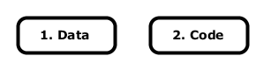
We should apply the same rule for language design. Let’s first think about data, before thinking about code.
Many programming languages provide the following data types:
-
primitive data types: boolean, number (integer and float), character, string
-
collections: list, set, map
-
structures (records), such as a
personstructure composed of fieldsidentifier,name,city -
null: the absence of a value
Some languages also provide enums, tuples, binary data, and maybe some more.
What should we do if we want to keep it as simple as possible?
It turns out that we just need one data type. Yes, one single data type: a list whose elements can be strings or lists. Put more simply: a tree of strings.
Here are some simple examples:
[ "Hello" ] [ "Bob" "Alice" ] [ "1" "2" [ "a" "b" "c" ] "foo" ]
It is easy to show that all above mentioned data types can be represented by just using a tree of strings data type.
Let’s look at each case:
-
Primitive data types can be represented by a list containing one string representing the value:
// boolean [ "yes" ] [ "no" ] // we could also use "true" and "false", but let's stick with "yes" and "no" // numbers [ "123" ] [ "-123.45" ] // character [ "a" ] // string (or enum) [ "big" ]
-
Collections:
-
a list or a tuple is a tree with only leaf nodes:
[ "a" "b" "a" ]
-
a set is a list with unique elements:
[ "a" "b" "c" ]
-
a map can be represented by a list whose elements are lists with two elements providing a key/value pair:
[ [ "1" "one" ] [ "2" "two" ] ]
-
-
A structure can be represented with a map:
[ [ "name" "Albert" ] [ "birthday" "1879-03-14" ] [ "birthplace" "Ulm" ] ]
-
nullis represented by an empty list:[]
-
Binary data can be coded as strings containing hexadecimal characters
[ "F0A1" "BC78" ]
To simplify coding let’s provide the following practical and intuitive syntax sugar:
-
The surrounding square brackets can be omitted for lists containing one element. Instead of …
[ "Hello" ]
... we can simply write:
"Hello"
-
The surrounding quotes can be omitted for numbers. Instead of …
[ "1" "2" "3" ]
... we can simply write:
[ 1 2 3 ]
-
Commas can optionally be inserted between list elements. Instead of …
[ 1 12.34 5 ]
... we can write:
[ 1, 12.34, 5 ]
-
Elements can appear on separate lines and white space is ignored. Instead of …
[ 7456.2345 76.23 83676.1223 ]
... we can write:
[ 7456.2345 76.23 83676.1223 ]
Remember:
Simplix has one data type: a tree of strings.
Example:
[ "a" "b" [ 1 2 ] "c" ]
Code
Basic Syntax Rules
We need some basic syntax rules.
Comments
Single-Line Comment
A single-line comment starts with //:
// a single line comment const pi = 3.1415926 // TODO: check if precision ok
Multi-Line Comment
A multi-line comment starts with /// on the first line and ends with ./// on the last line. Multi-line comments can be nested:
///
multi
line
comment
.///
///
comment
///
nested
comment
.///
blah blah blah
.///
Line Termination
An instruction ends with the end of line. There is no semicolon (;) at the end of an instruction:
const max_index = 100 var sum = 0
Line Continuation
An instruction is continued on the next line if the current line ends with \ or if the number of open brackets ( ( or [) doesn’t match the number of closed brackets ( ) or ]):
repeat for each long_variable_name \
in long_expression_denoting_a_list
const cities = [ "London"
"New York"
"Paris" ]
const foo = bar (
"long expression 1"
"long expression 2" )
Code blocks
A code block (a set of instructions) is indented and ends with a dot (.) on a separate line after the last instruction:
if condition then
instruction
instruction
.
Identifiers
Identifiers start with a letter, followed by any number of letters, digits and underscores (_).
Examples:
color make_delicious_coffee XML_file_20
As shown above, an underscore (_) is used as word separator in identifiers.
Lowercase/uppercase letters are used as in the English language. For example, uppercase letters are used for acronyms (e.g. HTML). There are no rules or semantic meanings associated with uppercase/lowercase letters (such as 'variable names must start with a lowercase letter').
Case-sensitivity
Simplix is case-sensitive. The following identifiers are all distinct:
happy Happy HAPPY
String literal
Simplix uses C-like string literals. Special characters in strings (tabs, new lines, etc.) must be escaped, e.g. "line\t1\r\nline\t2"
Functions
Every software application is based on a very simple, fundamental principle. It does some work composed of three steps:
-
It takes some input data
-
It makes a computation based on the input
-
It produces some output data
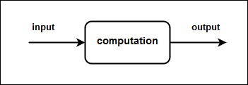
The smallest unit that accomplishes the above steps is a function (also called a method, procedure, sub-routine, depending on the language)
There is no doubt: In Simplix, we need functions.
A function is composed of:
-
an identifier (a unique name)
-
an optional list of input arguments
-
an optional output argument
-
a body (list of instructions)
|
Note
|
Functions in Simplix are not pure functions as in pure functional languages like Haskell. A Simplix function can have side effects, such as reading from or writing to OS devices. Therefore input/output arguments are optional. |
Here is an example of a function definition:
function add ( op1 op2 ) -> sum
Every function definition starts with the keyword function.
add is the function’s identifier.
Input arguments are surrounded by parenthesis. In our case we have two input arguments: op1 and op2.
-> separates input and output
sum is an identifier that describes the value returned by the function.
|
Note
|
When I started to design Simplix, I wanted every function to have exactly one input argument and one output argument (to make it as simple as possible). Multiple input values would simply be multiple elements of the input list. A function with no input could be called with an empty list. And a function with no output would just return an empty list. However, after playing around with some source code examples, I found this to be too simplistic and unpractical. Hence, I quickly abandoned this idea. |
Services
A set of functions can be grouped together in a service, in order to keep all functions well organized. That is, a service is a container for functions that belong to the same group of functions. You can also think of a service as a module. For example, service file_writer contains functions related to file write operations. Its counterpart, service file_reader, contains functions for reading files.
To select a function in a service, we use the syntax service_id.file_id. For example, service out contains function write_line, which is used to write to the standard output device. Thus, the syntax to select this function is out.write_line.
Instructions
Simplix is an imperative language. Hence, a function’s body is composed of instructions (also called statements in other programming languages).
Instructions are indented and terminated by a dot:
function foo ( input_1 input_2 ) -> result
instruction
instruction
instruction
.
As a bare minimum we just need 5 kinds of instructions:
-
Constant/variable declaration and variable re-assignment
-
variable declaration:
var name = "Bob" var sum = 0
-
variable re-assignment:
name = "Alice"
-
constant declaration:
const some_planets = [ "Mercury" "Venus" "Earth" "Mars" "Jupiter" ] const tree = [ 1 2 [ 21 22 ] 3 [ 31 32 33 ] ]
Note that a constant cannot be re-assigned. Note also that we could live without constants, and just use variables. But constants are a very simple addition that allows to write better code (because our intention to not change the value is clear, and we are shielded from accidentally changing the value).
-
-
function call
say_hello() say_hello ( "Bob" ) const result = number.add ( 1 2 )
-
if
if the_sun_shines then out.write_line ( "Antonio is very happy" ) else out.write_line ( "Antonio is happy" ) . if string.matches_regexes ( value, "[a-z]+" ) then message = "The value is composed of lowercase letters." ) else if string.matches_regexes ( value, "[A-Z]+" ) then message = "The value is composed of uppercase letters." ) else if string.matches_regexes ( value, "[0-9]+" ) then message = "The value is composed of digits." ) else message = "The value is empty or composed of different kinds of characters." ) . -
loops
-
while loop
repeat while has_more_messages() const message = get_next_message() out.write_line ( message ) . // infinite loop: repeat while "yes" out.write_line ( "Please terminate the process to stop me!" ) time.wait_milli_seconds ( 3000 ) . -
Iterating over a list
repeat for each name in [ "Tim" "Tom" "Tam" ] out.write_line ( [ "Hello " name ] ) .Output:
Hello Tim Hello Tom Hello Tam
-
-
return
function get_greeting ( name ) -> greeting return [ "Hello " name ] .
Remember:
A Simplix application is composed of functions that are grouped in services.
There are 5 kinds of instructions:
constant/variable assignment
function call
ifinstruction
whileandfor eachloops
returninstruction
Libraries
The usefulness of any programming language largely depends on the set of readily available libraries and frameworks. If we are lucky then we can quickly create impressive applications by just writing some glue-code to make existing software components work together seamlessly. Good libraries leverage our power to write quality software in a minimum of time.
Most programming languages are delivered with a standard library that provides very basic functionality needed for common tasks. The same must be done in Simplix. The standard library should provide useful functions for:
-
working with strings and lists
-
working with directories and files
-
date/time functions
-
input/output operations, such as reading from and writing to the OS’s standard input, output, and error devices, files, URLs, etc.
-
interacting with the OS (running OS commands/scripts and external applications, getting command line arguments, getting and setting environment variables, exiting the OS process with success or with an error code)
Having a good standard library is important, but not enough. Depending on the application we want to write, we need much more: working with HTML, JSON, and XML documents, using network communications, creating and changing media files (images, sound, video), etc. etc. We do not want to re-invent the wheel and lose time writing this code ourselves. We want to use existing libraries.
To achieve this, we just need to apply an important rule mentioned in Fundamental Pragmatics for Successful Programmers:
Use existing software whenever possible!
In the case of my proof-of-concept implementation of Simplix (more on this later) I decided to use Java as 'existing software'.
To make Simplix and Java work together, we just have to add two simple features:
-
Allow Java source code to be embedded in Simplix code. Here is a simple example:
function hello out.write_line ( "Hello from Simplix." ) java // This is Java code! System.out.println ( "Hello from Java." ); end java .Output:
Hello from Simplix. Hello from Java.
-
Allow any
.jarfile (Java package) to be used by a Simplix application, by just copying it into alibdirectory.
This increases the usefulness of Simplix tremendously. We can now:
-
use any existing Java software in a Simplix application. The Java software can be written in any Java Virtual Machine (JVM) language, such as Java, Scala, Clojure, PPL, etc.
-
call Java code from Simplix code, call Simplix code from Java code, and exchange in-memory data between Simplix and Java
-
write parts of a Simplix application in another JVM language, or even in C, via Java’s native interface
-
use a Simplix application or library in another JVM application
An additional advantage is that writing Simplix’s standard library now becomes very easy. In fact, the standard library is just a wrapper around existing Java code. Here is an example of a Simplix matches_regex function that takes a string and a regex as input, and tells us if the string matches the regex:
function matches_regex ( string, regex ) -> yes_no
java
String str = Conversions.listToString ( string );
String reg = Conversions.listToString ( regex );
return Conversions.booleanToList ( str.matches ( reg ) );
end java
.
Note the Conversions class that acts as a Simplix/Java bridge. It contains methods to convert Simplix data to Java data and vice-versa.
A nice side effect of using Java as target environment is that Java’s slogan "write once, run anywhere" now becomes true for Simplix too: a Simplix application can run on any system that supports Java: Mac, Unix/Linux, Windows and embedded devices.
Remember:
Simplix is delivered with a standard library.
Java libraries (
.jarfiles) can be used in a Simplix application.
Development Environment
Let us now see how to create and run applications.
|
Note
|
If you want to try out the steps below, you must first install Simplix. |
Create
To create a Simplix application, open an OS terminal in a directory of your choice and type:
sim create_app test_app
This command does nothing else than creating file test_app/src/start.sim under your current directory (you could also do this manually). The content of this file is:
function start
out.write_line ( "Hello from test_app." )
.
Run
To run the application go to directory test_app (the application’s root directory) and type:
sim run
Simplix will compile and run the application. The output is displayed in your terminal:
Hello from test_app.
Here is a print-screen of a command line session in Windows:
C:\tests\simplix>sim create_app test_app C:\tests\simplix>cd test_app C:\tests\simplix\test_app>sim run Hello from test_app.
|
Note
|
If you just want to re-run your application (without compiling it first), then you can execute the OS script run\test_app.bat on Windows or run\test_app.sh on Unix/Linux. This file is automatically created after successful compilation.
|
Develop
To develop your application you can now:
-
Add more functions in file
start.sim, e.g.function start say_hello() . function say_hello out.write_line ( "Hello" ) . -
Create additional
.simfiles in directorysrc. You can store these files in sub-directories ofsrc, in order to keep all source code files well organized in a hierarchy.Every file contains one or more functions.
The content of each file represents a Simplix service. As seen already, a service is simply a container for functions belonging to the same group of functions. For example, suppose we define functions
util_1,util_2, andutil_3in fileutilities.sim. In that case we have defined a service namedutilitiesthat contains functionsutil_1,util_2, andutil_3.To use a function defined in another service (i.e. located in another file), you must prefix the function’s name with the service identifier (i.e. the file name without extension), and a dot (
.). For example, if functionf1in filemy_app.simcalls functionf2in fileutils.sim, then the syntax is:utils.f2()
If you want to use Java packages in your Simplix application, then you just need to create a lib directory in your application’s root directory, and put any .jar file into that directory (or a sub-directory of it).
Remember:
Use
sim create_appto create a new application.Use
sim runto run an application.Source code files are stored in directory
src.
Deployment
The result of compiling a Simplix application is a standard Java .jar file in the application’s run directory (e.g. run/my_app.jar).
You can use any existing Java deployment technique to deploy and distribute your Simplix application as a one-click installation procedure (not discussed here).
Note that you don’t need to install Simplix on the user’s machine and you don’t need to distribute the Simplix source code. Only the standard Java Runtime Environment (JRE) needs to be installed (if not done already), and the .jar files produced by the Simplix compiler must be deployed.
At the time of writing, the total size for a small application like those we will see later is about 50 kB (including Simplix’s standard library, but excluding the Java runtime).
Examples
We now know the basics to create applications in Simplix. To get a feeling for how it all works in practice, let’s have a look at various examples.
|
Note
|
To try out any example (or write your own application), please follow the instructions in Development Environment All examples in this chapter have been tested on Windows with the implementation we’ll describe in the next chapter. At the time of writing no tests have been done on Linux. You can download the examples here. |
Hello World
To write a simple 'Hello world' application, open a terminal in the directory of your choice, and type:
sim create_app hello_app
This command creates file hello_app/src/start.sim. Open this file with your preferred editor and modify it so that it looks like this:
function start
out.write_line ( "Hello world" )
.
Explanations: out.write_line denotes function write_line that is defined in service out. Service out is part of Simplix’s standard library and contains functions to work with the OS’s standard output device. "Hello world" is the string that is passed as input to function write_line.
To run the application, go to directory hello_app (the application’s root directory) and type:
sim run
Output in your terminal:
Hello world
Here is a print-screen of the terminal session on Windows:
C:\tests\simplix>sim create_app hello_app C:\tests\simplix>cd hello_app C:\tests\simplix\hello_app>sim run Hello world
If you prefer a GUI version of the program, you can change the code to:
function start
GUI_dialogs.info ( "Hello world" )
.
Running this code displays:
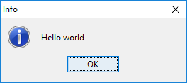
Count Lines of Code
After writing the Simplix compiler (more on that later), I wanted to know how many lines of code were needed. So I wrote a tool to do that - in Simplix.
I started with the following function that counts the lines of code in a single file:
function count_non_empty_lines_in_file ( file ) -> line_count // (1)
var line_count = 0 // (2)
repeat for each line in file_reader.read_lines ( file ) // (3)
if string.matches_regex ( line, ".*[^ \\t].*" ) then // (4)
line_count = number.add ( line_count 1 ) // (5)
.
.
return line_count // (6)
.
-
The function takes a file path as input and returns the number of non empty lines in the file.
-
Variable
line_countis initialized to zero. -
file_reader.read_lines(i.e. functionread_linesin servicefile_reader, part of Simplix’s standard library) reads the lines in filefile. We use a loop to iterate over them. Each line will be contained in variableline. -
We use function
string.matches_regex(part of Simplix’s standard library) to check if the line is not empty. -
In case of a non-empty line we increment
line_count. Note that we cannot writeline_count = line_count + 1, because Simplix doesn’t support operators (at least not in it’s current version). -
At the end of the loop,
line_countcontains the number of non-empty lines, which is returned as the function’s result.
|
Note
|
It is clear that more sophisticated languages allow the above code to be written more succinctly (or more 'elegantly'). In Java, for example, we can use streams and write a one-liner: public static long countNonEmptyLinesInFile ( File file ) throws IOException {
return Files.lines ( file.toPath() )
.filter ( line -> line.matches ( ".*[^ \\t].*" ) )
.count();
}
In Simplix- and Java-world, the programmer must learn and understand functions (methods) and instructions - the very basics of any imperative language. However, to write the above small Java method, the programmer must also learn and understand a good number of additional, non-trivial concepts: the Java exception mechanism, streams, lambda expressions, method modifiers, types, classes and objects. In Simplix, we favor simplicity. We minimize the set of concepts to be mastered by the programmer. Source code understandability is more important than the number of keystrokes necessary to write the code. |
The above function can be called like this:
const num_lines = count_non_empty_lines_in_file ( "C:/tests/simplix/name.txt" )
|
Note
|
You can use Windows or Unix path separators (\ or /) in directory paths. They are implicitly converted to the correct character, depending on the OS you are using. If you prefer to use the Windows backslash, then you must escape it (as in C, C#, Java, etc.): "C:\\tests\\simplix\\name.txt".
|
The next step is to write function count_non_empty_lines_in_files_of_directory, which takes a directory path as input, and returns the total number of lines found in all files contained in the directory tree.
We can then call this function from the start function. The whole code looks like this:
function start
const directory = "C:/tests/simplix/count_lines_of_code/src"
const line_count = count_non_empty_lines_in_files_of_directory ( directory )
out.write_line ( [ "Non-empty lines in files of directory " directory ": " line_count ] )
.
function count_non_empty_lines_in_files_of_directory ( directory ) -> line_count
var line_count = 0
repeat for each file in directory.files_in_tree ( directory )
const lines_in_file = count_non_empty_lines_in_file ( file )
line_count = number.add ( line_count lines_in_file )
.
return line_count
.
function count_non_empty_lines_in_file ( file ) -> line_count
var line_count = 0
repeat for each line in file_reader.read_lines ( file )
if string.matches_regex ( line, ".*[^ \\t].*" ) then
line_count = number.add ( line_count 1 )
.
.
return line_count
.
In the above example we use the application to count the lines of code in itself (C:/tests/simplix/count_lines_of_code/src). The result looks like this:
Non-empty lines in files of directory C:/tests/simplix/count_lines_of_code/src: 22
An obvious improvement of the tool would be to allow the directory (or a list of directories) to be specified as a command line argument. To make the tool even more versatile, the regex could also be provided as an optional command line argument. The default value would be the one shown in the code above. We’ll see later how to work with command line arguments.
Interacting With the OS
It must be easy to interact with the operating system (OS). We need the following essential operations:
-
read from the standard input device and write to the standard output and error devices.
-
read command line arguments provided when the Simplix application is started.
-
set the exit code when the Simplix application exits (0 = success, other integer values represent an error code).
-
call OS commands and scripts, and execute other applications installed on the system.
-
get and set environment variables.
Let’s look at some examples.
Standard input/output/error
The following example is inspired from the article A Very Quick Comparison of Popular Languages for Teaching Computer Programming, written by Patrick Jordan, a CS teacher. The article compares different programming languages by analyzing the code necessary to "read two numbers from the user, add them together and print out the result".
The simplest Simplix version could be written like this:
function start
const n1 = in.read_line() // (1)
const n2 = in.read_line()
out.write_line ( number.add ( n1 n2 ) ) // (2)
.
-
read a string from standard input
-
write to standard output
Let us make this program more user-friendly and provide an appropriate error message if the user doesn’t enter a valid number:
function start
const n1 = read_number()
const n2 = read_number()
const result = number.add ( n1 n2 )
out.write_line ( [ n1 " + " n2 " = " result ] )
.
function read_number -> number
out.write_line ( "Please enter a number and type <Enter>:" )
const result = in.read_line()
if not check.is_number ( result ) then // (1)
err.write_line ( [ "ERROR: " result " is not a number!" ] ) // (2)
process.exit_with_error ( 1 ) // (3)
.
return result
.
-
check if the string entered is a valid number
-
write an error to the standard error device and …
-
exit with an error code
Here is a print-screen of a running session:
Please enter a number and type <Enter>: 12 Please enter a number and type <Enter>: 5 12 + 5 = 17
The program also works with decimals and negative values:
Please enter a number and type <Enter>: 123.45 Please enter a number and type <Enter>: -0.45 123.45 + -0.45 = 123.00
There is no limit for the magnitude of numbers in Simplix (apart from the physical memory limits of the running system):
Please enter a number and type <Enter>: 34598349857923847592345928345872398745 Please enter a number and type <Enter>: 9837459834959234957923748.983274598345987 34598349857923847592345928345872398745 + 9837459834959234957923748.983274598345987 = 34598349857933685052180887580830322493.983274598345987
(Note: I didn’t check the result!)
In case of an invalid entry, an error is displayed:
Please enter a number and type <Enter>: foo.12 ERROR: foo.12 is not a number!
The standard OS devices can be redirected. Hence, we could create the following Windows .bat file in the application’s root directory:
cd run echo 10> input.txt echo 20>> input.txt java -jar OS_in_out_err.jar < input.txt > output.txt 2> errors.txt
-
The two
echocommands create:File input.txt10 20
-
java -jar OS_in_out_err.jaris the Java way to execute a.jarfile. Note that in our example the application has been created in directoryOS_in_out_err, which is also the name of the.jarfile. -
< input.txtinstructs the process to read data from fileinput.txt -
> output.txt: output is redirected to fileoutput.txt -
2> errors.txt: error is redirected to fileerrors.txt
Executing the above .bat file creates:
Please enter a number and type <Enter>: Please enter a number and type <Enter>: 10 + 20 = 30
On a Unix/Linux system we could do the same with a shell script (not shown here).
Command Line Arguments
Command line arguments can be retrieved with the expression process.arguments(). Here is an example to illustrate this:
function start
display_arguments() // (1)
.
function display_arguments
const arguments = process.arguments() // (2)
out.write_line ( [ "There are " list.size(arguments) " arguments." ] )
out.write_lines ( arguments ) // (3)
// alternative using a loop
repeat for each argument in arguments // (4)
out.write_line ( argument )
.
.
-
function
startcalls functiondisplay_arguments -
command line arguments can be retrieved with
process.arguments()(i.e. functionargumentsin serviceprocess) -
function
out.write_lineswrites a separate line for each element of the input argument -
we can also iterate over the arguments and write them out one by one
Executing this application with no command line arguments produces this output:
There are 0 arguments.
If we execute the application with the following .bat file located in the application’s root directory:
@echo off cd run java -jar OS_CL_arguments.jar arg1 "C:\Program Files\Test" "" 123
... then this will be the output:
There are 4 arguments. arg1 C:\Program Files\Test 123 arg1 C:\Program Files\Test 123
Process Exit Code
The common way to exit a process in Unix and Windows is to return with an integer value that signals success or failure.
Returning zero means success.
Any other value represents an integer error code. Different values can be used to denote different kinds of errors.
Here is a function that asks a yes/no question to the user and then exits with success or failure, depending on the user’s answer:
function start
const ok = GUI_dialogs.ask_yes_no ( "Is everything ok?" )
if ok then
process.exit_with_success()
else
process.exit_with_error ( 2 )
.
.
The exit code can be tested from the code that calls the Simplix application. Here is an example of a Windows .bat file (located in the application root directory) that calls the above function and then checks the exit code:
@echo off cd run java -jar OS_exit_code.jar set EXIT_CODE=%ERRORLEVEL% if %EXIT_CODE% EQU 0 goto success if %EXIT_CODE% NEQ 0 goto failure :success echo Success goto end :failure echo Failure code %EXIT_CODE% goto end :end
Executing the above OS script displays a GUI dialog:
If the user clicks 'Yes' then the application returns with exit code 0, and the OS script echoes:
Success
If the user clicks 'No', then the error code 2 is returned to the OS and the OS script echoes:
Failure code 2
Calling External Programs
We can call external programs in two ways:
-
just start the program and immediately continue execution
-
run the program, wait until execution is finished, and retrieve its exit code
Here is an example of opening an OS text editor (Windows Notepad in this case) to edit a file:
function start
OS_command.start_and_continue ( [
"notepad.exe"
"C:/tests/Simplix/config.txt" ] )
.
To write the list of files in the current working directory to the standard output device we can use Windows' dir command:
OS_command.run_and_wait ( [ "cmd" "/c" "dir" ] )
We can also execute the task in parallel, without waiting for it to finish. And store the result in file dir.txt:
OS_command.start_and_contine ( [ "cmd" "/c" "dir" ">" "dir.txt" ] )
We can execute OS script files (e.g. .bat files on Windows or .sh files on Unix/Linux) by simply providing the path to the script file. If we use run_and_wait (instead of start_and_continue) we can also check the script’s exit code. Example:
function start
const result = OS_command.run_and_wait ( "C:/tests/Simplix/my_backup.bat" )
if number.equals ( result 0 ) then
out.write_line ( "Backup ok." )
else
const message = [ "ERROR: Backup could not be done (error " result ")." ]
err.write_line ( message )
GUI_dialogs.error ( message )
.
.
To test if the code works we can create a mock file C:\tests\Simplix\my_backup.bat with the following content:
@echo off echo Doing backup exit 3
The outcome looks like this:
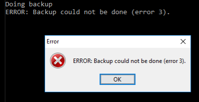
We can also provide parameters to the script file, simply by adding them after the file path, e.g.
OS_command.run_and_wait ( [ "file.bat", "p1", "p 2" "" 123 ] )
Interacting With Java
Besides interacting with the OS, being able to use and interact with Java software is one of the most useful and powerful features of Simplix, because now a huge set of battle-proven software is ready to be used in any Simplix application.
Suppose we need a web server. We can use Tomcat, one of the best web servers available. Let’s quickly see how to do this, without digging into details.
After create a new application, create directory lib in your application’s root directory. This directory can contain any number of .jar files to be used in the Simplix application.
The .jar files for Tomcat are available here. Download the 'embedded' version, and extract all files into directory lib (or a sub-directory of lib). Here is the list of files:
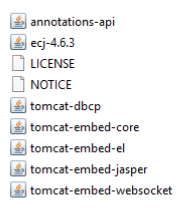
Now modify file src/start.sim so that it looks like this:
java_header
import org.apache.catalina.startup.Tomcat;
end java_header
function start
start_Tomcat_web_server ( "C:/tests/Simplix/web_app", 8080 )
process.wait_until_killed()
.
function start_Tomcat_web_server ( web_app_root_directory, port_number )
java
Tomcat tomcat = new Tomcat();
int port = Conversions.listToInt ( port_number );
tomcat.setPort ( port );
try {
String context = "";
String rootDir = Conversions.listToString ( web_app_root_directory );
tomcat.addWebapp ( context, rootDir );
tomcat.start();
} catch ( Exception e ) {
e.printStackTrace();
}
end java
.
Directory C:\tests\Simplix\web_app contains the web application files. Create at least one index.html file with the following content:
<!doctype html>
<html lang="en">
<head>
<meta charset="utf-8">
<title>Test</title>
</head>
<body>
<p>Hello from Tomcat</p>
</body>
</html>
Run the Simplix application, open a browser, and go to http://localhost:8080/:
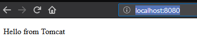
You can now use the full power of Tomcat (Java Server Pages, servlets, etc.) to create whatever you want.
Miscellaneous
Let’s close this chapter with some code snippets showing other useful features.
Text File Operations
Service file_writer provides simple functions to write or append data to text files. And file_reader can be used to read the whole content into a single string or to read the lines into a list of strings.
Example:
function demo
const file = "test.txt"
const data = [ "line_1", "line_2" ]
file_writer.write_lines ( file, data )
file_writer.append_line ( file, "line_3" )
const lines = file_reader.read_lines ( file )
repeat for each line in lines
out.write_line ( line )
.
.
Output:
line_1 line_2 line_3
Data Persistence
Any data structure can be stored to a text file with function storage.store_to_file. Later, the data can be restored with storage.restore_from_file.
The following script demonstrates how configuration data (a map of key/value pairs) can be persisted into a file, and later be loaded.
function storage_test
const config = [
[ "address" "127.0.0.1" ]
[ "port" "8080" ]
[ "default_page" "index.html" ]
]
// store config to file config.txt
const file = "config.txt"
storage.store_to_file ( config, file )
// load config from config.txt
const restored_config = storage.restore_from_file ( file )
assert.is_equal ( config, restored_config )
.
Structures
As we have seen already, every object in Simplix is just a tree of strings. There is no embedded support for structures (record types). However, we can make it easy and straightforward to work with data structures. For each structure, we can create a service with specific helper functions.
Suppose we write a bookstore application. We want to represent a book as a simple structure composed of three fields: ISBN, title, and author. In this case it is useful to create a book service with specific functions to create a book, retrieve its fields by name, and create a nice string representation for a book:
// create a new book
function create ( ISBN, title, author ) -> book
return [ ISBN, title, author ]
.
// get a book's ISBN
function ISBN ( book ) -> ISBN
return list.get ( book, 1 ) // get the first element stored in book
.
// get a book's title
function title ( book ) -> title
return list.get ( book, 2 )
.
// get a book's author
function author ( book ) -> author
return list.get ( book, 3 )
.
function to_string ( book ) -> string
return [ "Book "
title ( book )
" by "
author ( book ) ]
.
Now we can write code like this:
function test
const Effective_Java = book.create ( "978-0134685991", "Effective Java", "Joshua Bloch" )
const ISBN = book.ISBN ( Effective_Java )
assert.is_equal ( ISBN, "978-0134685991" )
out.write_line ( book.to_string ( Effective_Java ) )
.
Output:
Book Effective Java by Joshua Bloch
Data inspection
Simplix’s standard library provides some functions to visualize data and to convert data into different text formats, including HTML, XML and JSON. This can be useful for data visualization, data exchange with other applications, and for debugging purposes.
Service tree provides functions to convert data to different string representations. Here is an example:
function demo
const data = [ "a" "b" [ "b1" "b2" [ "b21" ] ] "c" ]
out.write ( tree.to_string_tree ( data ) )
.
Output:
a
b
b1
b2
b21
c
Besides to_string_tree, the following conversion functions are available:
-
to_string -
to_string_lines -
to_string_with_separator -
to_canonical_string -
to_HTML -
to_XML -
to_JSON
Service tree_GUI provides functions to visualize data in a GUI. Each of the above mentioned to_… function in service tree has a corresponding show_as… function in service tree_GUI.
For example, the following code:
function demo
const data = [ "a" "b" [ "b1" "b2" [ "b21" ] ] "c" ]
tree_GUI.show_as_string_tree ( data )
.
... opens the default text editor with the data displayed as a tree:
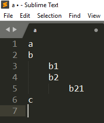
Replacing show_as_string_tree with show_as_HTML produces HTML code and opens the default browser:
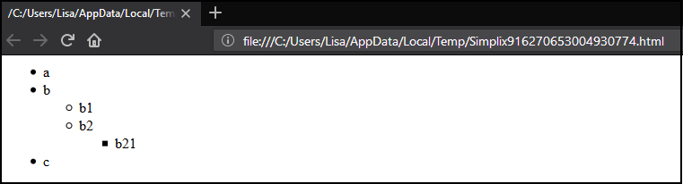
We can also simply write tree_GUI.show ( data ) to open a collapsable tree GUI in an OS window:
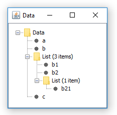
Implementation
After brainstorming basic ideas and scribbling down a few source code examples, I was quickly convinced it was worth it to spend some more time and create a proof-of-concept implementation of Simplix. I wanted to play with it, see what works, what doesn’t work, and ascertain its limitations.
|
Important
|
Please keep in mind that this is a proof-of-concept (pre-alpha) version with the following shortcomings:
If you encounter any problems then please send an email to the address displayed on Simplix’s web site. Any kind of constructive feedback is of course also very welcome. |
The following image illustrates the process of building a Simplix application from source code:
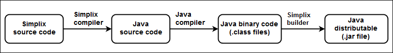
The Simplix compiler is itself composed of typical compilers components:
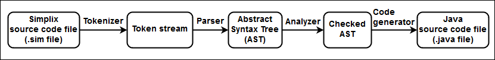
The Simplix compiler/builder is written in PPL (another programming language under construction (a much more ambitious project)).
To give you an example of how the compiler’s code looks like, the following is an excerpt of a parser function that parses a constant declaration, such as const foo = "bar":
function accept_constant_instruction -> SPL_constant_instruction_AST or null
if not accept_keyword ( SPL_keywords.const ) then
return null
.
const tokens = require_current_instruction_tokens
const id = require_id on_null: return null
require_symbol ( SPL_symbols.equal_sign )
const expression = require_expression on_null: return null
return SPL_constant_instruction_AST.create ( tokens, id, expression )
.
The compiler has been designed with the ability to target not only Java code. Instead of generating Java code, it could generate C code or code in another language. In that case the standard library would of course also need to be rewritten.
To give you an idea of the size of code, here are some numbers at the time of writing (April 2018). The lines of code have been counted with the Simplix tool count_lines_of_code, explained in a previous chapter.
| Component | Lines of code | Size of .jar file |
|---|---|---|
Compiler/builder |
3901 |
319 kB |
Standard library |
1259 |
36 kB |
|
Note
|
If there is enough interest, I am more than willing to invest more time to eliminate Simplix’s current shortcomings, and produce a 1.0 version. Please help to spread the word and contact me if you want to participate in any way, or if you know somebody who is interested. Thank you. |
Limitations
So far we have seen that Simplix is a simple programming language and useful for writing small command line tools and mini-applications.
Nevertheless, let us recall that the current proof-of-concept implementation has three major weaknesses:
-
The standard library is very limited. Missing functionality must be coded by embedding Java code in the Simplix application.
-
Some compiler error messages are too cryptic, especially for inexperienced Java programmers.
-
As the implementation is a pre-alpha version, it is still buggy and not yet ready to write production code.
However, these three weaknesses could easily be eliminated by spending a bit more time to polish the compiler and make the standard library more complete. The hard part is done already. What remains to be done is easy, but requires a bit more time.
There is, however, an important question that still needs an answer:
Could Simplix be used to develop big software applications (i.e. thousands of source code lines written by a team of programmers)?
Theoretically: yes.
Practically: no!
In Simplix there are no limits as to the number of source code files, number of functions, size of strings etc., apart from those imposed by the OS and the Java Virtual Machine (JVM). Parts of the application can be written in other JVM languages (Java, Scala, Clojure, etc.), and Java’s native interface even allows us to call C code if needed. The vast set of existing Java libraries can be used in a Simplix application, as demonstrated in previous chapters.
Hence, we could use Simplix to create big software applications.
However, there are a number of serious limitations we have to be aware of. Simplix is inappropriate, and other programming languages much better suited to develop big, mission-critical enterprise applications.
Let us just look at a few main reasons, without attempting to be comprehensive.
Again, let’s start talking about data, before talking about code.
Data
While Simplix’s type system is incredibly simple and very easy to learn and understand, it also has a number of serious drawbacks:
-
It lacks expressiveness
Every object in Simplix is potentially a tree of strings. Because there is just one type, there is no specific type information associated with an object reference (input/output argument, constant, variable). Hence, the kind of data stored in an object reference is only expressed by its name, not by its type.
For example, look at the following function definition in Simplix:
function make_coffee ( size, milk, sugar ) -> cup_of_coffee
Now let’s look at a similar method definition in a C#/Java-like language:
public CupOfCoffee makeCoffee ( CupOfCoffeeSize size, boolean milk, boolean sugar )
There are a number of questions that arise only in the Simplix version. For example:
-
What are valid values for input argument
size? Is it the amount of coffee in centi-liters? In the C#/Java version, we can lookup typeCupOfCoffeeSizeand see (for example) that it is an enumerated type with valuessmall,medium, andlarge. -
What are valid values for input arguments
milkandsugar? Is it an amount or a boolean? -
What is the data structure of the result returned? In Simplix,
cup_of_coffeeis just a tree of strings. The best we can do is to provide a service for structurecup_of_coffee, as demonstrated in a previous example. In the C#/Java version, the data structure can be looked up in the API ofCupOfCoffee.
-
-
It is error-prone
As there is just one data type, the compiler cannot detect type incompatibility errors. For example, calling the above function
make_coffeewith the title of a movie assigned to input argumentmilkdoesn’t produce a compiler error. The best we can do is to check the input argument in the function’s body (e.g.assert.is_yes_no ( milk )), so that at least a runtime error will be generated as soon as possible. -
In some cases, Simplix’s data structures are space- and time-inefficient
Here are two striking examples:
-
Space-inefficiency:
Storing a boolean value as a list that contains the string "yes" or "no" is a shameful waste of memory.
-
Time-inefficiency:
Adding two numbers (e.g.
number.add ( 2 3 )) involves three cumbersome steps:-
The two numbers, stored as strings, must be parsed and converted into internal number representations
-
The numbers are added
-
The result is converted into a string that is inserted into a new list.
-
-
-
There is no specific support for the 'absence of a value'
The 'absence of a value' can be represented with an empty list in Simplix. But there is no distinction between nullable and non-nullable types. There is no language support to ensure that the 'absence of a value' is handled explicitly. Other languages provide compile-time null-safety, or the
Maybe/Optionalpattern to achieve this. In Simplix it is the programmer’s responsibility to handle the 'absence of a value' correctly.
If we write small applications not involving big data then the above limitations are often irrelevant. However, their relevance increases with the size of code, data, and the number of programmers working on the code base. Simplistic type systems are a bad fit for developing big applications. A well designed, powerful type system helps a lot and can dramatically improve productivity, maintainability, and reliability in a software development project.
Code
To keep it simple, Simplix just provides the basic building blocks to write code: functions and instructions.
Hence, there are a number of features that experienced programmers will miss. Here are some examples:
-
There are no operators (and hence no operator precedence rules). Instead of writing
a = b + c, we have to writea = number.add ( b c ) -
There are no higher-order functions. Functions in Simplix cannot receive functions as input values or return a function as result. Hence, there are no anonymous functions (lambdas) and no closures. This limits the ability to write generic, reusable code.
-
There are no object oriented concepts like interfaces, classes, type inheritance and polymorphism.
-
There are no advanced functional programming concepts supported, such as pattern matching, currying, etc.
-
There is no built-in support for concurrent/parallel processing. These features require the use of Java libraries (standard or 3th party) or OS processes.
Development environment
It goes without saying that the current proof-of-concept version of Simplix lacks a lot of features found in professional development environments: IDE support, unit testing, build tools, etc. etc.
Summary
Here is a brief summary of all concepts:
-
Simplix has one data type: a tree of strings.
Example: [ "a" "b" [ 1 2 ] "c" ]
-
An application is composed of functions that are grouped in services (
.simfiles). -
There are 5 kinds of instructions:
-
constant/variable assignment
-
function call
-
ifinstruction -
whileandfor eachloops -
returninstruction
-
-
Example showing all features:
file src/start.simfunction start const count = count_numbers_in_list ( [ "a" 1 2 "b" ] ) assert.is_equal ( count 2 ) . function count_numbers_in_list ( list ) -> result var result = 0 repeat for each element in list if check.is_number ( element ) then result = number.add ( result 1 ) . . return result . -
Simplix is delivered with a standard library. Additional Java libraries (.jar) can be used in a Simplix application.
-
To create and run an application:
-
Use
sim create_app {app_name}to create a new application. -
Source code files (
.simfiles) are stored in directorysrc. -
Use
sim runin the root directory to run an application.
-
There is also a more complete Abridged User Manual available.
Simplix is free, open source, portable, compiled.
Final Thoughts
What is the most important lesson to take away from this experiment?
If somebody asked me this question I would promptly reply: It is fascinating and enlightening to see the level of simplicity that can be achieved without making the language useless.
An Abridged User Manual can easily be printed on two DIN A4 pages. It’s probably fair to say that an experienced programmer can learn Simplix in a couple of hours or less. People who can use a computer but never wrote a line of code will possibly be able to write or adapt small tools after a few days of learning Simplix. Yet, despite its simplicity, the language is still practical and useful for small, real-life applications, as seen in the above examples.
However, this utmost simplicity comes at a price. As we saw in chapter Limitations, Simplix is not well suited for developing big software applications. This doesn’t come as a surprise. Simplix is simplistic (oversimple) for many use cases. It violates the "but not simpler" part of Einstein’s famous quote:
Everything should be as simple as possible, but not simpler!
Yet another compelling question pops up if we look at Einstein’s excellent advice: Isn’t it true that most popular programming languages violate the first part of the quote?
Fact is: There is a lot of unneeded complexity that is omnipresent and appears in numerous variations. Here are just a few examples: Undefined behavior in C and C++ ("anything at all can happen"); oddities like truthy and falsy values; implicit type coercion; the notorious difficulty for many people (including myself) to understand monads; the increasing complexity and constant change of the Javascript ecosystem; the frustrating lack of null-safety in the majority of popular programming languages.
Bjarne Stroustrup was right when he said: "… you could design a language about a tenth of the size of C++ … providing roughly what C++ does."
We want simplicity, don’t we? A simple (but not too simple) development environment not only makes coding more enjoyable. It also makes us more productive. It makes our software more reliable. We can deliver better software faster to the users. At the end, everyone wins.
Edsger W. Dijkstra put it like this:
Simplicity is prerequisite for reliability.
Simplicity and clarity decide between success and failure.
Our mission is clear: We must simplify the craft of creating software.
The next challenge in our quest for simplicity is to find an answer to the same question we asked at the beginning of this article. But this time, we have to ask it in the context of BIG software applications:
What is the simplest thing that could possibly work?
Links
-
Simplix download
-
Documentation:
-
Examples shown in this article
-
Standard library API (Java version)
-
Source code:
-
Standard library (written in Java)
-
Development environment (compiler, builder, etc., written in PPL)
-